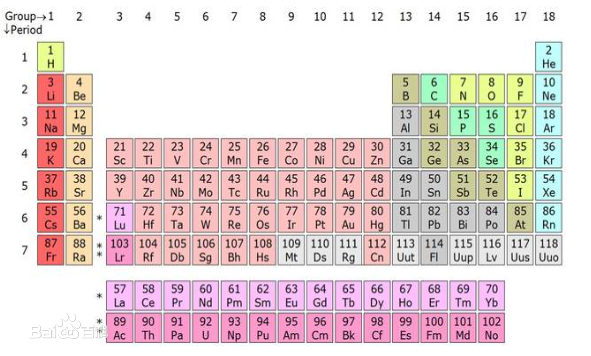

化学简介
作者：佚名 来源：百度百科 发布时间：2017-12-25
“化学”一词，若单是从字面解释就是“变化的科学”。化学如同物理一样皆为自然科学的基础科学。化学是一门以实验为基础的自然科学。门捷列夫提出的化学元素周期表大大促进了化学的发展。如今很多人称化学为“中心科学”，因为化学为部分科学学科的核心，如材料科学、纳米科技、生物化学等。化学是在原子层次上研究物质的组成、结构、性质、及变化规律的自然科学，这也是化学变化的核心基础。现代化学下有五个二级学科：无机化学、有机化学、物理化学、分析化学与高分子化学。
化学是重要的基础科学之一，是一门以实验为基础的学科，在与物理学、生物学、地理学、天文学等学科的相互渗透中，得到了迅速的发展，也推动了其他学科和技术的发展。例如，核酸化学的研究成果使今天的生物学从细胞水平提高到分子水平，建立了分子生物学。
化学对我们认识和利用物质具有重要的作用。宇宙是由物质组成的，化学则是人类认识和改造物质世界的主要方法和手段之一，它是一门历史悠久而又富有活力的学科，与人类进步和社会发展的关系非常密切，它的成就是社会文明的重要标志。 从开始用火的原始社会，到使用各种人造物质的现代社会，人类都在享用化学成果。人类的生活能够不断提高和改善，化学的贡献在其中起了重要的作用。
对各种星体的化学成分的分析，得出了元素分布的规律，发现了星际空间有简单化合物的存在，为天体演化和现代宇宙学提供了实验数据，还丰富了自然辩证法的内容。
文章录入：16hope 责任编辑：16hope